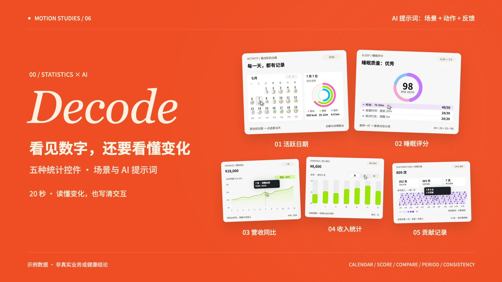

▶ 观看 20 秒知识短片01 / THE PLAYGROUND
先选场景，再说清动作与反馈。01 / CALENDAR
Calendar
最活跃的日期
适用场景
运动习惯回顾
AI 提示词 / 直接这样说
02 / THE FILM
下载 MP4 ↗20 seconds.
Five useful prompts.
场景 + 动作 + 反馈
1920 × 1080 / 60fps / 合成配乐
03 / MAKE IT YOURS
把效果，变成你的需求。
每条提示词都是可修改的起点。换成你的业务场景，补充动作规则，写明成功与失败时的反馈。
完整源码、五条提示词和制作步骤均已公开。